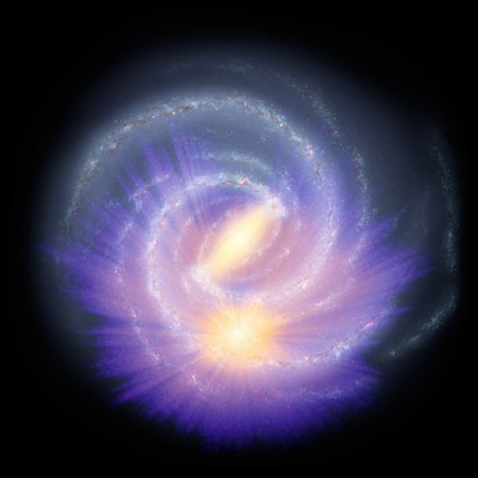
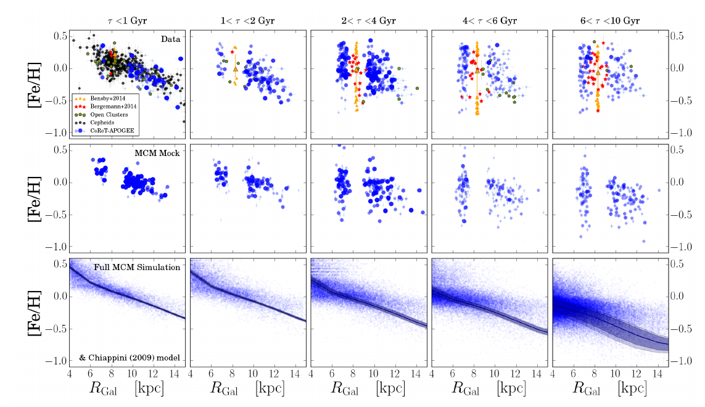
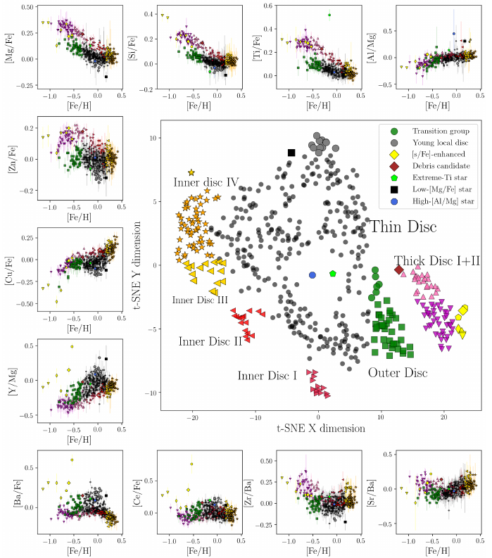

Profile
I am currently a Ramón y Cajal Fellow in the GaiaUB group at the Institute for Space Science at the University of Barcelona (ICCUB), applying data analysis techniques within the realm of Galactic astrophysics. Something in between an observer and a theorist.
My scientific interests range from nucleosynthesis over stellar models, large astronomical surveys, star clusters, Milky Way modeling, and cosmology to high-energy astrophysics. My PhD at the AIP focused on spectroscopic stellar surveys, and how to combine them with astrometric and asteroseismic data to study the formation history of the Milky Way.
I believe in collaborative science and am an active member in various large astronomical projects, such as the Gaia mission, the WEAVE Project, and the 4-Meter Multi-Object Survey Telescope (4MOST).
I am curious about Austrian 20th century literature, destructive progressive music, the philosophy of science, politics, South America, and absurd vinyl records. Currently learning Czech, Català, and trumpet:)
Research
Mapping the Milky Way with the StarHorse code
Stellar distances and ages for millions of stars are needed to understand the chemo-dynamical history of Galaxy. The StarHorse code is a flexible python tool that I am co-developing since my PhD, and that enables us to determine precise stellar parameters for millions of field stars with good Gaia parallaxes.
The Gaia data, combined with ground- and space-based photometric surceys, also allowed us to study the three-dimensional distribution of stars beyond the parallax horizon, clearly revealing structures like the Galactic bar in stellar density maps ( ESA Press Release").
Queiroz, A. B. A.; Anders, F.; Chiappini, C.; et al. (2023), StarHorse results for spectroscopic surveys + Gaia DR3: Ages for MSTO and subgiants and chemical substructures in the solar vicinity, A&A, accepted
Anders, F.; Khalatyan, A.; Queiroz, A. B. A.; et al. (2021), Photo-astrometric distances, extinctions, and astrophysical parameters for Gaia EDR3 stars brighter than G = 18.5, A&A, 658, A91
Queiroz, A. B. A.; Anders, F.; Chiappini, C.; et al. (2020), From the bulge to the outer disc: StarHorse stellar parameters, distances, and extinctions for stars in APOGEE DR16 and other spectroscopic surveys, A&A, 638, A76
Anders, F.; Khalatyan, A.; Chiappini, C.; et al. (2019), Photo-astrometric distances, extinctions, and astrophysical parameters for Gaia DR2 stars brighter than G = 18, A&A, 628, A94
Queiroz, A. B. A.; Anders, F., Santiago, B. X.; et al. (2018), StarHorse: a Bayesian tool for determining stellar masses, ages, distances, and extinctions for field stars, MNRAS, 476, 2, 2556
Galactic archaeology
The main challenge of Galactic archaeology today is to unravel the Milky Way’s assembly and evolution history by determining ages, chemical compositions, and kinematics of millions of stars covering all parts of the Milky Way. Major observing campaigns of the last decade, and the success of the Gaia mission, have assured that this is in principle possible: precise radial velocities as well as basic chemical information for millions of stars have already been obtained by surveys such as RAVE, SEGUE, APOGEE, LAMOST or GALAH. Gaia, on the other hand, allows us to measure parallaxes and transverse kinematics for billions of stars for the first time with unprecedented precision; the second Gaia data release from 2018 provides a new testbench for the next-generation Milky-Way models. The mere existence of these large datasets, however, is not enough to ensure a major knowledge gain about our Galaxy. Many datasets are subject to non-trivial selection effects, systematic uncertainties (especially for ages of field stars), and correlated errors that impede straightforward conclusions and affect simplistic model comparisons (see e.g. this press release). Here is the first systematic use of combined asteroseismic and spectroscopic data to measure the radial abundance gradient in the Galaxy, together with a comparison to a cosmological Milky-Way simulation:
Ratcliffe, B.; Minchev, I.; Anders, F., et al. (2023), Unveiling the time evolution of chemical abundances across the Milky Way disk with APOGEE, MNRAS, submitted
Queiroz, A. B. A.; Chiappini, C.; Perez-Villegas, A.; Khalatyan, A.; Anders, F.; et al. (2021), The Milky Way's bar and bulge revealed by APOGEE DR16 and Gaia DR2, A&A, 656, A156
Minchev, I.; Anders, F., Recio-Blanco, A.; et al. (2018), Estimating stellar birth radii and the time evolution of Milky Way's ISM metallicity gradient, MNRAS, 481, 1, 645
Anders, F., Chiappini, C.; Minchev, I.; et al. (2017), Red giants observed by CoRoT and APOGEE: The evolution of the Milky Way's radial metallicity gradient, A&A, 600, A70
Anders, F., Chiappini, C.; Rodrigues, T. S.; et al. (2017), Galactic archaeology with asteroseismology and spectroscopy: Red giants observed by CoRoT and APOGEE , A&A, 597, A30
Anders, F., Chiappini, C.; Santiago, B. X.; et al. (2014), Chemodynamics of the Milky Way. I. The first year of APOGEE data , A&A, 564, A115
Discovering and characterising open clusters with Gaia
Open clusters are groups of a dozen to several thousands of stars that were born together from the same parent molecular cloud, and remained bound by gravity. Their distances and ages can be estimated more easily than for individual stars, and they can be used to trace the structure of our Galaxy. ESA's Gaia mission provides us with precise measurements of parallaxes and proper motions that can be used to identify compact groups of stars traveling together through the Galaxy. Most of these newly discovered clusters cannot be seen in static images of the sky, but can easily be spotted using the Gaia measurements of distance and velocity (see e.g. this Gaia image of the week).

Donada, J., Anders, F., Jordi, C., Masana, E., et al. (2023), The multiplicity fraction in 202 open clusters from Gaia , A&A, submitted
Anders, F., Castro-Ginard, A., Casado, J., Jordi, C., Balaguer-Núñez, L. (2022), NGC 1605 is not a binary cluster , AAS Research Notes, 6, 58
Castro-Ginard, A.; Jordi, C.; Luri, X.; Cantat-Gaudin, T. ; Carrasco, J. M.; Casamiquela, L.; Anders, F.; Balaguer-Núñez, L.; Badia, R. M. (2021), Hunting for open clusters in Gaia EDR3: 664 new open clusters found with OCfinder, A&A, 661, A118
Anders, F., Cantat-Gaudin, T., Quadrino-Lodoso, I., Gieles, M., Jordi, C., Castro-Ginard, A., Balaguer-Núñez, L. (2021), The star cluster age function in the Galactic disc with Gaia DR2: Fewer old clusters and a low cluster formation efficiency , A&A Letters, 645, L2
Tarricq, Y., Soubiran, C., Casamiquela, L., Cantat-Gaudin, T., Chemin, L., Anders, F., et al. (2021), 3D kinematics and age distribution of the Open Cluster population, A&A, 647, A19
Cantat-Gaudin, T., Anders, F., Castro-Ginard, A., Jordi, C., Romero-Gómez, M., et al. (2020), Painting a portrait of the Galactic disc with its stellar clusters, A&A, 640, A1
Cantat-Gaudin, T., Anders, F. (2020), Clusters and mirages: cataloguing stellar aggregates in the Milky Way , A&A, 633, A99
Castro-Ginard, A., Jordi, C., Luri, X., Álvarez Cid-Fuentes, J., Casamiquela, L., Anders, F., et al. (2020), Hunting for open clusters in Gaia DR2: 582 new open clusters in the Galactic disc , A&A, 635, A45
Data mining and machine learning
The sample sizes and the number of available stellar chemical abundances have reached dimensions in which it has become difficult to process all the available information in an effective manner. Dimensionality reduction and unsupervised learning techniques can be used to analyse the stellar abundance-space distribution. As an example, here is a t-SNE view of the solar vicinity's stellar abundance space (from Anders et al. 2018):
Casamiquela, L.; Castro-Ginard, A., Anders, F., Soubiran, C. (2021), The (im)possibility of strong chemical tagging, A&A, 654, A151
Perottoni, H. D.; Amarante, J. A. S.; Limberg, G.; Rocha-Pinto, H. J.; Rossi, S., Anders, F., Borbolato, L. (2021), Searching for Extragalactic Exoplanetary Systems: the Curious Case of BD+20 2457, ApJL, 913, L3
Ramos, P., Antoja, T., Mateu, C., Anders, F., Laporte, C. F. P., Carballo-Bello, J. A., Famaey, B., Ibata, R. (2020), The outer disc in shambles: Blind detection of Monoceros and the ACS with Gaia's astrometric sample, A&A, 646, A99
Guiglion, G., Matijevic, G., Queiroz, A. B. A., ..., Anders, F., et al. (2020), The RAdial Velocity Experiment (RAVE): Parameterisation of RAVE spectra based on convolutional neural networks, A&A, 644, 168
Anders, F., Chiappini, C., Santiago, B. X., et al. (2018), Dissecting stellar chemical abundance space with t-SNE , A&A, 619, A125
Contribution to ongoing and future stellar surveys
The StarHorse catalogues and my expertise in isochrone fitting, survey data analysis, and open clusters have allowed me to contribute to some ambitious projects of the Galactic astronomy community. I have been involved in the final science analysis of the RAVE survey, the production of value-added catalogues for the SDSS-IV/APOGEE survey, the analysis of the OCCASO survey, and the preparation for the 4MOST Disc & Bulge Survey surveys (4MIDABLE). Currently I am spending some time on validating the upcoming Gaia data release 3, as part of the Gaia DPAC team.

Gaia Collaboration, Vallenari, A., Brown, A. G. A., ...; Anders, F., et al. (2023), Gaia Data Release 3: Summary of the content and survey properties , A\&A, in press
Babusiaux, C., Fabricius, C., Khanna, S., ...; Anders, F., et al. (2023), Gaia Data Release 3: Catalogue Validation , A\&A, in press
Abdurro'uf, Accetta, K. Aerts, C., ..., Anders, F., et al. (2022), The 17th Data Release of the Sloan Digital Sky Surveys: Complete Release of MaNGA, MaStar and APOGEE-2 Data, ApJS, 259, 35
Ahumada, R.; Allende Prieto, C.;,Almeida, A., Anders, F., et al. (2020), The 16th Data Release of the Sloan Digital Sky Surveys: First Release from the APOGEE-2 Southern Survey and Full Release of eBOSS Spectra, ApJS, 249, 3
Donor, J., Frinchaboy, P. M., Cunha, K., ..., Anders, F., et al. (2020), The Open Cluster Chemical Abundances and Mapping Survey. IV. Abundances for 128 Open Clusters Using SDSS/APOGEE DR16, AJ, 159, 5, 199
Casamiquela, L.; Blanco-Cuaresma, S.; Carrera, R.; ...; Anders, F.; et al. (2019), OCCASO - III. Iron peak and α elements of 18 open clusters. Comparison with chemical evolution models and field stars, MNRAS, 490, 1, 821
Chiappini, C.; Minchev, I.; Starkenburg, E.; Anders, F.; et al. (2019), 4MOST Consortium Survey 3: Milky Way Disc and Bulge Low-Resolution Survey (4MIDABLE-LR), The ESO Messenger, 175, 30
de Jong, R. S.; Agertz, O.; Berbel, A. A.; Aird, J.; Alexander, D. A.; Amarsi, A.; Anders, F.; et al. (2019), 4MOST: Project overview and information for the First Call for Proposals, The ESO Messenger, 175, 3
Ahn, C. P.; Alexandroff, R.; Allende Prieto, C.; Anders, F.; et al. (2014), The Tenth Data Release of the Sloan Digital Sky Survey: First Spectroscopic Data from the SDSS-III Apache Point Observatory Galactic Evolution Experiment, ApJS, 211, 17